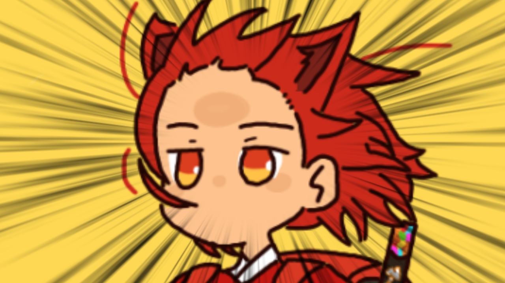
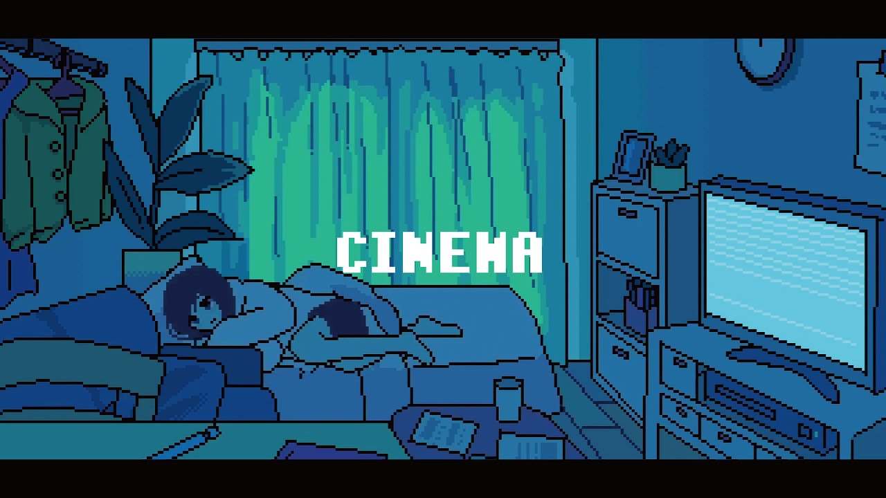
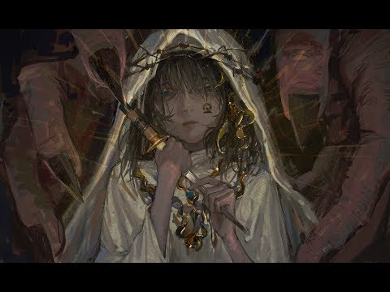
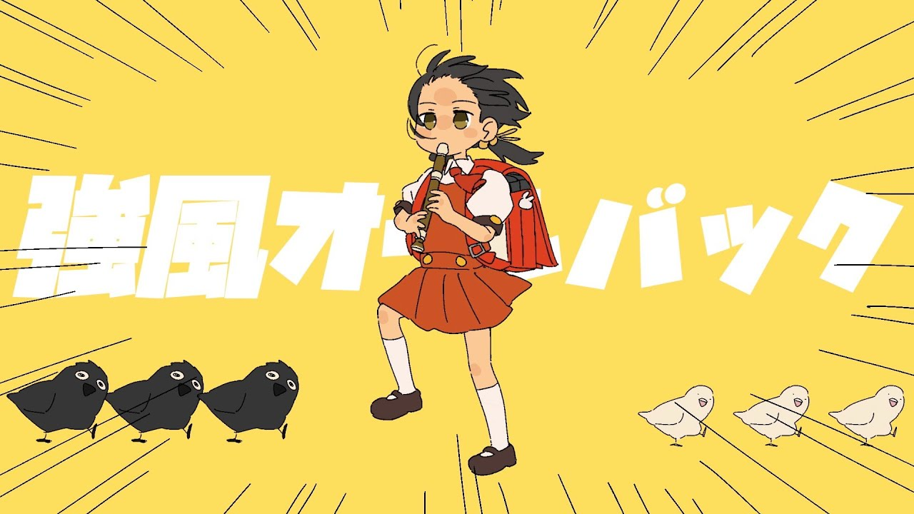

あかねこランキング
1位 シネマ/Ayase
現在、YOASOBIのコンポーザーとしても活動しているAyaseが制作した曲
この曲は「プロジェクトセカイ」という音ゲーに提供された曲であり、「Vivid BAD SQUAD」というグループが歌っている。
ちなみにこの曲に泣かされました
2位 STIGMA/DUSTCELL
「DUSTCELL」というMisumiとEMAによる二人組の音楽ユニット。曲調がとってもかっこいい。
「STIGMA」という単語は「汚名」という意味がある。
3位 強風オールバック
外でた瞬間終わった曲